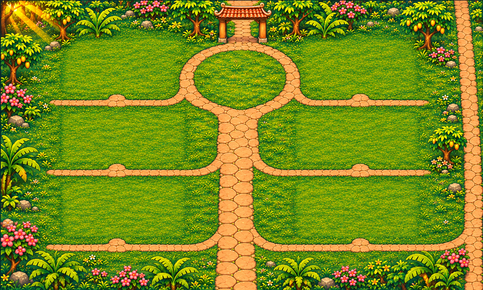

ĐÃ THAY THẾ · Không triển khai tách chế độ làng; xem social-lake-draft-v1.html
Tạo làng
Vào làng bạn
Làng cũ
Làng thân thiện
Mô phỏng thêm người đồng ý
Mô phỏng đến hiệu lực

Làng Mùa Vui · 3/12 nhà
Làng › Luật ghé thăm
Để sau
Xác nhận